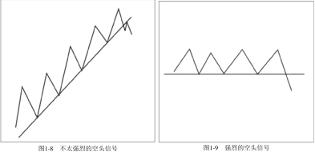

第一章 一切从这里开始
“低买高卖！”这就是致富捷径，对吗？错！这只是年复一年亏钱的普通人所信奉但实际却造成了他们亏损的陈词滥调。
在华尔街，还有其他许多貌似正确的说法，实际上都是错误的。譬如，你得阅读财务报表、看电视里的晚间商业报道才能了解整体经济和主要产业的发展；你需要向那些西装革履的所谓专业人士寻求建议。
这些不是致富的方法，它们不会让你赚钱。但许多投资者却把它们当作了打开财富之门的钥匙。
“低买高卖”是一种陈词滥调，而非行动指南。这阻碍了普通投资者掌握“高买高卖”的专业方法，而这就是我要教给你一以贯之去做的方法。
全方位了解财经新闻也不会给你的投资加分多少。
1、在这个计算机普及、即时通信设备发达的世界，在你还没来得及阅读相关报道时，最新的消息就已经对金融市场产生了影响。
2、另外，市场是根据预期而不是当前收益来交易的。为了成功，你得学会利用市场行为本身所提供的诸多线索。本书就是要教你发现这些线索，并把它们变成利润。
3、最后，听从经纪人和分析师等专业人士的建议也不会有太大帮助。这些专家的建议还不如你对着股票屏幕扔飞镖所得到的决定靠谱（一套飞镖的成本可比咨询这些人的费用要便宜得多）。专家们总是花费大量的时间同其他经纪人和分析师交谈，他们还去参加世界500强企业高管们举行的午宴，了解这些公司的经营信息。你只要参加几次这种午宴，便会发觉餐点和信息都已被搁在桌上很久了。
市场上真正的职业投资者与一线的专业交易者不会执着于这些带误导性的方法。他们决策的依据是市场行为，而不是新闻。当抱着陈腐教条的大众还在亏损中挣扎时，真正的职业投资者们却已经赚了大钱。一般投资者抱怨他们在股市上不够幸运，这种说法没道理。这根本就不是运气的问题（注：非运气即实力）。他们采用错误的规则参与游戏，如果他们不能学会获胜的规则，就会一直亏损下去。想要盈利，他们就必须坚持正确的方法——恰当地把握市场时机，合理地控制贪婪和恐惧这两个投资的大敌。
本书的全部内容就是——如何获胜！
在犯过很多错误之后，我终于学会解读市场提供给我们的非常明显的征兆，并在特定情况下做出策略性的反应。我会教给你一套市场规则，按照这套规则，你将承受更小的风险而获得更多的利润。这套规则不要求你钻研公司的财务报表，或者聆听公司新闻发言人有关提升股东回报的无聊言论。这套规则只需要你做好两件事：①控制自己的贪婪和恐惧；②发现并解读市场提供给你的明显征兆。
这就是我要在本书中教给你的内容，这些内容将使你成为一名成功的投资者。最重要的是，如果你真正掌握了这套规则，你每周只需要花费大约1小时来执行它。
经过了25年的历练，我明白了什么样的投资方法是有效的，什么样的是无效的。我已经将我的知识和经验提炼为一种在市场中可以持续获胜的方法。在过去15年里，我主编的杂志《专业价格分析者》(The Professional Tape Reader)成功地预测了每一个牛市和熊市，所采用的就是这种方法。在任何市场上，无论股票、共同基金、期权、股指期货，还是大宗商品市场，这套规则都是适用的。本书后面的内容对这些市场都会提及，但我们的重点是股票市场。
在进一步讲解之前我想强调，本书不是所谓的《暴富手册》。每年我都会看见很多类似的书籍，这些书籍绝大多数毫无出版价值。这样的书要么太过简略而缺乏实际操作性；要么太过空谈且理论化，看得让人头疼；更有甚者给了你不可能兑现的承诺。如果你想在下周二下午4点以前将1万元变成100万元，那你现在就可以停止阅读本书了。但是如果你很认真，希望学到无论在牛市还是在熊市都能长期持续盈利的方法，并想在接下来的几年中为自己积累一笔不小的财富，那么本书就最适合不过了。
还有一些事情你必须了解。你和我组成了一个团队。在学习我的方法时，你投入的精力越多，以后从市场中赚得也越多。这与参加教练指导的网球课程类似。看书只是学习的开始，重要的是，你必须实践。我会让你学得轻松，而你只要做好你分内的事，就能学会我的方法。
与其他深奥难懂、只有作者和一些学术人士才能够理解的技术分析类书籍不同，本书仅仅涉及很少的但对于盈利非常重要的深奥内容，其他不太重要的复杂内容都被去掉了。同时，本书按照逻辑顺序进行章节编排，逐步提高你的获利能力。为了帮助你检查对本书方法的了解程度，很多章节末尾附有测验。如果你发现自己对某一章掌握得还不够透彻，就应立即回头加强该部分的学习，直到真正掌握，再继续学习下一章。
我的投资哲学
接下来，你将具体地学到我分析和打败市场的方法。这肯定不容易，但也不像大多数投资者和交易员所说的那样难。
第一课是一致性。
在过去的25年里，我始终如一地遵守我的投资方法和投资纪律。这一点非常重要。不要这个星期是基本面分析者，下个星期又成了技术分析者［1］。不要这个月跟踪指标A，下个月又转向了指标B。找到一个好的方法，遵守投资纪律，并且坚持用它。如果用它始终不能奏效，才换一种新的方法。但是仍然要严格地遵守投资纪律，不能仅仅因为认为这次情况与以往不同，而放弃一种好的方法。
第二课是技术分析。
大多数投资者所不了解的事实是：如果你每天根据新闻上的基本面报道来进行投资操作，是无法持续赚钱的。这样的方法会导致灾难，对大多数新手来说就像一剂毒药。你必须了解市场的反应机制——决定股票价格的是对未来的预期而不是当前的基本面信息。因此，我采用技术分析的方法来解读市场对于已知资讯和未来预期所做出的反应。不要被“技术分析”这个词吓倒，所有的技术分析方法实际上就是对价量关系的研究，并据此对未来趋势做出判断。
在本书里，我会教给你一套新的规则和一门新的市场语言，它们会使得这个市场更容易被预测，更容易帮助投资者赚钱，更让人着迷。
技术分析不仅是一门科学，更是一门艺术。就像不是每个拿着画笔的人都能成为毕加索一样，不是每个研究图形的人都能成为约翰・迈吉［2］一样的技术分析大师。我会教给你这样的分析方法，对你来说它很新，恰当运用它会使你在市场上更容易获利。你从此便能只赚不赔了？当然不是，这与橄榄球比赛中一个四分卫不可能每次传球都成功是一样的道理。
你不必强求每次投资都成功，但只要坚持使用我的方法，成功的概率会大很多，你会是胜利者。大多数职业投资者都清楚一个秘密：只要你能做到让利润滚动起来并迅速止损，哪怕投资成功率不到50%，你也能够在市场上赚取可观的利润。后面的章节里我会告诉你应该如何正确地应对亏损的情况，这将是你所学习的内容中最有效的提升利润的秘诀。
注释
[1]基本面分析者依据一些因素来制定买卖的决策，这些因素主要包括宏观经济和行业的状况、具体某个公司的盈利表现等。技术分析者关注市场行为本身，将注意力放在价量关系上以解读市场的供求状况。
[2]约翰•迈吉JohnMagee)因1948年著《股市趋势技术分析》(7ec加AnalysisofStockTre刀ds)一书，被誉为“技术分析之父”。
为什么用技术分析
现在我们讲具体的内容。先把你脑中预设的关于市场的观念和看法完全扔到一边，准备好重新开始。就像在进行减肥计划时，首先需要清肠道一样，这里也需要你把既有观念抛开，然后一点点建立新的体系。
如果你是一个坚定的基本面分析者，也不必担心，学习本书不会清除掉你已有的知识体系。当你掌握了技术分析方法后，你就有能力综合这两种方法，更好地通过基本面分析确定买卖时机。
如果你对技术分析方法已经掌握得比较纯熟，你很可能跟我一样，忽视重要的新闻报道，而将注意力完全集中在图形所传递的信息上。这也是为什么每一期《专业价格分析者》的封面都会印有“价格轨迹说明一切”。这不仅是一个有趣的标语，也是一种有效的市场哲学。
简单来说，公司盈利、新产品、管理等所有已知的、被关注的基本面信息都已经综合反映在股价之中。这并不意味着我连悬而未决的并购这样重要的基本面信息都不关心，而是我很早以前就意识到，我们不可能在这些信息引起股价变动之前就发现它们，当我们发现时，已经太晚了。的确，我们会听到传言，但是每一百个传言中至多有一两个是真的，这样的概率无法使我们在市场上持续盈利。你得接受这个事实——除非你违法进行内部交易，否则你不可能在重要信息公布前得到它们。当你在报纸上读到某则消息时，已经来不及根据这一消息做出可以盈利的操作了。但是，请注意，一旦你知道如何解读量价关系和图形，你常常就能跟上内部人士的脚步，即使你并不知道内部消息。
如果股票XYZ在过去的几个月内一直以每周2万〜3万股的成交量在低位徘徊，突然，它以大成交量（周交易量为25万〜30万股）突破上限，也就是技术分析者常说的阻力线（稍后我将定义本书所有技术分析专业术语）。你不必是福尔摩斯也会发现其中的蹊跷。
现在请看皮德蒙特航空公司和光谱动力公司（见图1-1和图1-2）的股价图形。虽然你尚未受过训练（还得继续往下学习至少100页），还无法判断出它们的量价关系变化意味着什么，但凭直接观察也能知道，在1987年初与1987年中期稍前，在皮德蒙特航空公司和光谱动力公司分别做出重大公告之前的几个月，市场交易已经出现异常。当时我并不知道内情，但通过对量价关系的分析和解读，我在其收购消息和巨额盈利公布前推荐了这两只股票（见图1-1和图1-2中箭头指示处）。显然，大量的内部知情人士正在购买这两只股票。当你读完本书，回翻到此页你就会更清楚地意识到当时卖掉这些股票——就像成千上万的投资者日复一日所做的一样——是多么的愚蠢！它们正在不断上涨！更重要的是，你会知道为什么当时应该下买单。[1]
图1-1皮德蒙特航空公司
图1-2光谱动力公司
而且，并非只有从像并购案这么轰动的基本面消息上才能看出技术分析的好处。请看图1-3和图1-4关于哈拉斯公司和TS工业的股价图。事后来看，1978年是买入哈拉斯股票的合适时机，1986年买入15工业股票更是明智的。但是，两个有趣的事实应该会使你更能接受技术分析方法。
第一，这两只股票都在《专业价格分析者》中被推荐为“买入”（见图1-3和图1-4中箭头指示处）。
第二，当被推荐时，这两只股票都缺乏基本面的支持，但股价上涨迅速。当时，哈拉斯过去12个月的每股收益由2.41元[2]下挫到2.38元，之后6个月当它股价翻番时，每股收益进一步下跌到2.16元。TS工业的基本面更差，表现却更惊人。在1986年我们推荐这只股票时，其过去12个月的每股收益仅有37美分——正常但没有吸引力。在15个月后，当股价上涨超过200%时，每股收益却进一步下跌到9美分。
疯狂吗？一点也不！一旦你明白了市场运行的真实情况并非象牙塔里的教科书中所说那样，你就知道这样的例子遍地都是。并且当你掌握了我的技术分析方法后，就不再会感到迷惑不解，而是会利用这样的机会去获利。
图1-3哈拉斯公司

图1-4 TS工业
当我们放眼整个市场，这种模式就会在更大的层面上清晰地呈现出来。在1974年底，道琼斯工业指数从1050点迅速降至570点，市场上悲观气氛非常浓厚，报刊头条都是令人绝望的消息（见图1-5）。某主流财经报纸刊登了一则标题为“世界大萧条”的报道。这可是一则好消息！更明显的是，某主流新闻周刊刊出一幅漫画：一只大熊撞倒华尔街的楼柱。恐惧继续蔓延，人们觉得市场看起来会进一步跳水——可能跌至250〜300点！在一片悲观和恐惧中，技术分析指标明确显示：买进。一个新的牛市那时已经萌芽，道琼斯工业指数后来迅速回到1000点以上。
图1-5新闻集锦（1974年11月）
现在你是否得到了一些启发？
这也是为什么精明的职业投资者在利空消息中买入，而在利多消息中卖出。
股价在可怕的消息笼罩下形成底部；而在盈利大幅增长、股票分割等消息引起大众狂欢时形成顶部。
与此相反，普通交易员与投资者在利多消息中，买在顶部附近，而在利空消息中，卖在底部附近。所以，无论是普通公众持续的亏损，还是真正的职业投资者持续的获利，都与运气无关，而与他们所遵循的不同游戏规则有关。这与玩牌真的很像：职业扑克牌玩家清楚地知道各种组合出现的概率，拒绝贸然冒险，而新手往往根据自己的预测和感觉行事，最后总是一败涂地。
因此，你的投资哲学应该很简单：
1．绝不要在没有查看图形的情况下买卖股票。
2．绝不要在好消息公布时买入股票，尤其是在图形显示消息公布前股价已有明显上涨的情况下。
3．绝不要在股价暴跌时因为觉得股票便宜而买进。在持续的卖压下，你会发现股票会变得更便宜。
4．绝不要在下跌趋势中买进股票（接下来我会告诉你，如何明确地定义下跌趋势）。
5．绝不要持有处于下跌趋势中的个股，不论它的市盈率有多低。几个星期后，当更低的股价出现时，你会发现股价下跌的原因。
6．始终保持一致性。如果在完全相同的情况下，你有时买进，有时卖出，那么你的交易纪律就有严重问题。
懂得如何阅读图形和技术分析并不是什么高深莫测的科学，但也不是算命。非常简单，它是解读市场健康状况的心电图。医生在为你做诊断之前，会为你拍摄X光、验血、做心电图检查。一位称职的技术分析师也会对市场做类似的检查。好了，让我们继续前行，我将带你进入股票市场。
注释
[1]本书中的图形除特别说明外，均来自曼斯菲尔德股票图形，后文不再一一标明。
[2]本书中的计价单位“元”其实是“美元”，后文不再一一标明。
术语界定
在绘制你未来的致富之路以前，有一些基本术语你必须熟悉。图1-6会帮助你更好地理解它们的意思。即使你不是学习专业技术分析出身，你也很可能听说过这些术语，但关于它们确切的含义，你可能还有些迷惑。接下来的快速浏览就能使你清楚地掌握它们。即使你学过技术分析，也看看我是如何定义这些术语的，这样我们可以更好地沟通。这非常重要，因为这些术语是构成我的技术分析方法的一块块积木，在本书中它们会被反复地提及。所以，请花一两分钟把这些定义浏览一遍，确保你清楚每一个术语的含义。如果你在本章的学习上下了工夫，那么后面的内容将十分容易理解。如果你发现对某个术语不是百分百地明白，我建议你之后回到这部分内容把它搞清楚。
我不打算严格按照字母顺序来介绍这些技术用语，因为当你理解了某些术语的定义以后，能够更容易地掌握其他的术语。
首先，你需要把图1-6中股票XYZ的图形学习一下。先看一遍，记住你一开始对它的直观感觉。
接下来，一次研读一个定义，好好思考，只研究图形中与定义有关的部分。不要贪多，不要企图一次就记住所有定义，这完全没有必要。慢慢地学习这一部分对你是有意义的。在学习了几章以后，你会觉得自己已经是一个技术分析老手了。
下面，我们开始：
图1-6股票XYZ
支撑：
在此区域，一直下跌的股价开始稳定，接下来反弹并上涨（至少暂时是这样）。它就像一个地板。需要注意的是，不要像许多技术分析者一样，认为所谓的支撑是在某一个点上。实际上，它是一个区域或者说区间。在图1—6里，支撑区域最初是在26〜26.5这个区间，第一次低点在26，第二次在26．5，第三次止跌于26．25，第四次在26。
请注意，向下突破支撑区域的下限（在本例中是26）对股价而言具有非常负面的含义。一个给定的支撑区域受到冲击的次数越多，冲击持续的时间越长，一旦股价最终跌破支撑区域的下限，就是强烈的下跌信号。还需要注意的是，一旦股价向上突破或向下突破支撑区域，新的支撑区域又会在新的股价水平上形成。在股票XYZ的例子中，新的支撑区域在8〜8.5区间重新形成（见图1—6）。
阻力：
在这个区域，上涨的股价受到阻力，从而有下跌的可能（至少暂时是这样），接着又发生反弹，但未突破该区域。同样，一个给定的阻力区域受到冲击的次数越多（股价多次冲击该阻力区域的上限），冲击持续的时间越长，一旦股价最终向上突破阻力区域的上限，就是强烈的上涨信号。在我们的例子中，在30附近形成了第一个阻力区域，在重要的下跌阶段结束以后，新的有效阻力区在11.5〜12形成。之前，第一次反弹在12处受阻，第二次在11．5处受阻，接着又在11.75处受阻，最终突破这个区域的上限。始终记住，向上突破阻力区域的上限是明显的股价上涨信号。与前面相同，要认识到新的阻力区域随着股价的波动在新的水平上形成。在XYZ的例子中，第一个阻力区域形成于29.5〜30，然后又在11.5〜12形成。
交易区间：
这是买方与卖方进行“战斗”的中间区域。当一只股票处于上升通道时，买方力量明显强于卖方，导致股价上涨。而处于下降通道的股票恰好相反，卖方的力量远大于买方，使得股价下跌。在交易区间里，买卖双方力量较为均衡，双方的战斗在支撑区间（图1-6中为8〜8.5）与阻力区间（11.5〜12）之间进行。请注意图中还有另一个交易区间（26〜30）。
移动均线（MA）：
移动平均线是一个非常重要的技术分析工具，它能帮助你同时留意短期波动与长期波动。移动平均线的作用就是让你从无序的日间波动中看清楚长期趋势，从而免受无序波动的影响，尤其是在新的买卖程序加剧了每日震荡的情况下。在这些年里，我发现10周移动平均线最适合交易员使用，而30周移动平均线最适合长期投资者［1］。
在股票交易时，股价低于30周移动平均线的股票绝不能买入，尤其当30周均线向下时。而股价高于30周移动平均线的股票绝不能卖空，尤其当30周均线正在上升时。
对长期投资者来说，买入一只股票的理想时机就是30周移动平均线不再处于下降趋势，股价向上突破阻力区域，同时站上30周移动平均线的时候。
对一个准备操作的交易员来说，买入一只股票的理想时机是均线处于升势中，股价已经站在30周移动平均线以上时。理想的进场点是股价在新的交易区间盘整过后，回拉至移动平均线附近，再向上突破阻力区的时候。
向上突破：
向上突破指股票的价格移动到阻力区域的上限以上（图1-6中为12）。在这个例子中，股价越过阻力区的上限，我们认为突破在12.125处完成。就像是鸡蛋有不同的品级，向上突破也有不同的含金量。始终要记住两点：
（1）股价在阻力区域盘整的时间越长，最后的向上突破越可靠；
（2）向上突破时的成交量越大，预示着上涨的势头越猛（别着急，在接下来的几章中我会更加详细地讲解这些原则，现在你只需要记住这两条简单的原则就能使你的利润大涨）。
向下突破：
向下突破正好与向上突破相反，即股票价格移动到支撑区域的下限以下的时候（在图1-6的例子中为26）。在这个例子中，支撑区域下限被击穿时，向下突破就发生在25．875处。与向上突破不同，向下突破不需要根据交易量的急剧放大来确认，但成交量还是会有某种程度放大。
回撤：
股票向上突破交易区间明显上升以后，常常会有一次获利回吐的调整，将股价带回初次向上突破点（本例中为12．125），此时是加仓的理想时机（如果回撤伴随着成交量的大幅萎缩就更好了）。相反地，股价向下突破支撑并继续下跌后，常常会反弹逼近向下突破点（本例中为25．875）。如果此时的成交量很小，该点就是理想的卖空介入点。
趋势线：
如果你用一把尺子连接某个股票图形里任意两个低点，你就会得到一条趋势线。但是，一条普通趋势线与一条重要趋势线之间的差异非常大！一条重要趋势线至少会碰到三个低点。

图1-7天际线公司股价图
图1-7画的就是一条重要趋势线，这条线被触及了四次，在第五次试探时才被跌破。趋势线被突破时好比警报拉响，因为这意味着趋势方向的改变。
股价跌破一条上升的趋势线意味着下跌趋势即将来临；
而股价突破一条下降的趋势线则意味着上涨的开始（注意图1-7，当天际线公司的股价向下突破它的上升趋势线后，出现了迅速跳水）。

还有一点也很重要：上升趋势线的斜率越大，以其向下突破来预示股票进入下跌趋势的可靠性就越差。如果你画出了一条非常陡峭的上升趋势线（见图1-8），一次向下突破击穿它时，可能仅仅意味着一只股票（或一个市场指数）现在涨势放缓——因为此前的涨速不具有可持续性。
趋势线越接近水平（见图1-9），当它被向下突破时，负面意味越强。

相反，如果一条下降的趋势线倾斜的角度越大（见图1-10），以其向上突破来预示进入上涨的可靠性就越差。它可能仅仅意味着（尤其是当股价低于长期移动平均线时）股价跌速放慢。
下降趋势线越接近水平（见图1-11），当它被向上突破击穿时，牛市意味越强。当股价向上突破一条重要趋势线，并在数天之内站上上扬的长期移动平均线时，就释放出了最强烈的多头信号。相反，当股价向下跌破一条重要的趋势线，并在数天之内跌破长期移动平均线时，就释放出了最强烈的空头信号。
上升趋势：（见图1-6）
上升趋势就是在几周甚至几年的时间里，某只股票的价格（或市场指数）高点越来越高，低点也越来越高
下降趋势：（见图1-6）
下降趋势就是在几周甚至几年的时间里，某只股票的价格（或市场指数）高点越来越低，低点也越来越低
其他术语如交易员、投资者、短期和长期等定义就相对比较主观了。对你来说很重要的是要知道当我用这些术语时指的是什么，因为某个人对投资的定义可能是另外一个人对于交易的定义。
交易员：
我在本书中提到交易员时所指的并不是那些早上买入、下午卖出的人。我所说的交易员是指那些想抓住2〜4个月股价大幅变动的人。我认为这是明智的交易。周一买入、周二卖出的人只能使其经纪人变得富有。
投资者：
我认为投资期限的上限是12个月。当然这并不意味着你不能持有股票更长时间，但是我不认为在3、4或5年的时间跨度内谈论市场（或股票）有什么意义，因为在这么长的时间里，有太多的变数和太多的周期会发挥影响。
短期：根据我的定义，短期是指1〜6周的变动周期。
中期：中期指6周〜4个月的变动周期。
长期：我对长期的定义是4〜12个月。股价变动的主要趋势是长期的，这也是最重要、最需要关注的。如果你的投资与长期趋势一致，你就能够弥补短期的损失。
相对强度：
相对强度指的是某只股票（或某个股票组合）的表现同整个市场的关系。例如，如果股票XYZ价格上涨了10%，同期整个市场指数上涨了20%，那么虽然XYZ的股价上涨了，但它相对强度弱。如果股票XYZ价格下跌了10%，同期市场指数下跌20%，那么尽管XYZ的股价下跌了，但它相对强度较好。计算相对强度的公式很简单，即用某只股票（或某个股票组合）的价格除以整个市场的平均价格（市场指数）。
卖空：
卖空是最容易被误解的概念，也是最未被充分利用的技术。专业投资者们常常运用这种手法，但是90%的个人投资者从不尝试。卖空是指当预计股价在未来会下跌时，就对你当时并未持有的股票下卖单。例如，你在20元的价格上卖空股票XYZ，你需要向你的经纪人借入这些股票用以交易。如果股票XYZ的价格如你预料跌至10元，你就在市场上买入股票XYZ偿还给你的经纪人。在这一过程中，每股你就赚了10元。所以，谁说熊市不能获利呢？
我会在适当的时候以整章的篇幅说明卖空。
现在你已经读了每个术语的定义，也了解了它们的基本含义，请回到图1-6再学习一遍。你现在应该能更深刻地理解它们了。如果在接下来的章节中，你忘了某个术语的定义或对它没有百分百的把握，请重新阅读本部分的术语定义。
下一个有意思的概念就是图形。在你学习图形之前，有一个小测试，你可以看看自己对于本书基本要素的理解。测试后面附有答案。
测 试
1.股票XYZ价格从50元涨至60元，涨幅为20%。道琼斯工业指数同期涨幅25%。这是相对强度较好的一个例子。正确 错误
2.一条趋势线被触碰的次数越多（未被突破），则该趋势线越重要，而它最终被突破时所释放的信号越强。
正确 错误
3.一条上升趋势线越陡峭，它被跌破所预示的意义就越不重要。正确 错误
4.股价进入交易区间时是多头信号，因为这显示买方力量比卖方强大。正确 错误
5.某只股票的价格在交易区间内。第一次，跌至8元然后反弹，第二次，跌至8.5元然后反弹，第三次，跌至8.25元然后反弹。整个8〜8.5元可以被看作支撑区域。正确 错误
6.阻力区域被触碰的次数越多（未被突破），最终的向上突破多头意味越浓。正确 错误
7.不管某只股票的基本面有多好，只要其股价在下降的30周移动平均线以下，千万不要买入。正确错误
8.一只股票的价格伴随着成交量的萎缩向上突破阻力区域，这是合适的买入时机，因为这表示卖方的力量越来越弱。 正确 错误
答 案
1．错误。该股票涨幅不如市场指数，相对强度较差。
2．正确。
3．正确。
4．错误。交易区间是一个买卖双方力量均衡的区间，形势如何发展还不确定。
5．正确。
6．正确。
7．正确。
8．错误。股价向上突破伴随着成交量的放大才是好的买入时机。成交量萎缩的突破很可能是虚假的，因为缺乏强有力的买方力量推动。
注释
[1]30周移动平均线的计算方法是将本周五晚上的收盘价与前面29周周五的收盘价加总，把上述值除以30所得到的结果即本周图形所应描绘的点（很明显，某股票的10周移动平均线是本周五的收盘价与前面9个周五的收盘价加总，再除以10）。
多种多样的图形
图形的种类很多，而且可以以不同的时间周期为单位，如以日、周、月等为单位。当我向你介绍所有种类的图形时，我会告诉你对于交易员来说哪一种是最简单、最有效的，对于投资者来说哪一种是最简单、最有效的。两种基本类型的图形是我们应该熟悉的。
一种是线图（linechart）或称条形图（barchart），它描述在一定时期内股票的交易量以及最高价、最低价和收盘价。另一种图形是点数图（见图1-12），只记录价格的变动，没有时间和交易量。因此，如果某只股票价格在某天内大幅震荡，那么当天就会被记录数次。在未来的几天内，如果该股没有变化（都以相同价格收盘），则不需再记录，因为没有价格变化可供记录。点数图是市场行为的简洁摘要，对于发现重要形态、确认支撑区域（股价停止下跌的地方）和阻力区域（股价停止上涨的地方）非常有用。
当分析股票时，我会把点数图和其他图表综合起来用，但我从不单独用它，因为没有成交量和均线这些信息。而且比起线图或者条形图，点数图更不容易掌握，因此在本书中我打算主要讲解条形图。只要合理使用条形图，你会收获可观的利润。
现在我们回到条形图。选择多长的时间区间实际上并没有关系，但为了更好地讲解（见图1-13），假设我们谈的是一天的交易情况（日线图）。如果这一天的最高价是18元、最低价是16．5元、收盘价是17．5元，连接最高价和最低价从而得到一条直线，并在收盘价处划一条水平的短线，就得到了一张条形图。对于成交量，在同一天的图形底部纵轴上标有不同的数值。如果当天的成交量是25000股，那么从25000股的成交量水平向下划线至0，便得到了交易量线。
周线图与日线图不同的地方仅仅在于把一周（从周一至周五）而非一日的最高价、最低价和收盘价标出来，并且标出这一周的成交量。在更长时间的月线图上，只是把整个月的相关数据（最高价、最低价、收盘价和整个月的成交量）标出来，其他与周线图和日线图是一样的。图1-14、1-15和1-16就是这三种图形的例子。
这三种不同周期的图形各有用处。日线图（见图1-14）的数据精确度较高，对于短期交易最有用。


周线图（见图1-15）既提供了较好的数据精确度（短线交易员还是应该使用日线图），又对从事中期交易的交易员和投资者了解股价主要的变动走势有非常重要的价值。
月线图（见图1-16）对于需要判断股价在几年中的走势的长期投资者来说，是一个很好的工具。
本书中，当我们提到图形时，重点会放在周线图上，因为对于投资者来说它是最全面的。不过，请注意，这三种图形都是非常好的工具，都能服务于相应的目的。
解读周线图
现在我们开始进入实质性内容，学习周线图（见图1-17）。如果你以前没有学过也无须担心——我保证你在很短时间内就可以掌握它。当然，如果你已经学习过技术分析，可以快速浏览接下来这几页。这样，大家都能有大致相当的起点。
不是有关图形的方方面面我都会讲——其中许多内容是很基础的，另有一些让人困惑且用处不大。我们要学的是真正重要并能帮助我们获利的图形要领。
1．首先看标有最高价、最低价和收盘价的条柱。股价是图形中最重要的要素，因为随着时间的积累，股价的变动会形成一定的形态，为我们判断未来股价走势提供线索。
2．第二个要素是周成交量。价涨量增、价跌量减是积极的信号。就像我们在前面提到，在后面还会多次提到的一样：向上突破伴随成交量的巨幅放大是非常重要的。成交量大意味着急迫而强大的买盘将会推动股价进一步上涨。
3．图形中的第三个要素是30周移动平均线。在本书中的周线图上所提供的30周均线并非每周数据等权重的简单移动平均线(注：应是ma均线)，在这条均线上，离当前的日期越近，数据被赋予的权重越高。这样的处理方法使得移动平均线对近期的变动更加敏感，可以迅速地调整方向。
这样加权后的移动平均线的缺陷在于，它会导致更多的“锯齿”信号［1］出现。尽管如此，因为30周移动平均线是长期的移动平均线，所以它所包含的信息还是相当有意义的。记住，如果一只股票价格低于30周移动平均线，不管根据基本面判断其股价如何便宜，即便其最近经历了大幅下跌，也千万别买入。股价表现给你发出了清晰的信号：这是一个有虫的苹果！根本不要考虑买入。相反，如果一只股票的价格高于其正在上升的30周移动平均线，不管其市盈率有多高，都不要对它进行卖空操作。
注释[1]“锯齿”用于表明一种市场状态，在剧烈的价格变动之后紧接着出现一个反向变动。译者注
4．第四点要注意的是股价在各年中的长期走势（注：其实就是长期图表的走势）。在本书中图形的左下角有各年度的最高价、最低价指标，表明股价的长期走势。这个指标的用处就在于帮助你将目前的股价放在一个历史背景下看待。

当1986年固特异轮胎公司的股价向上突破至新高（见图1-18）时，迅速看一眼长期走势图就可以知道这也是几年来的新高。这是一个非常好的形势，股价上涨已经没有了阻力。由于股价打开了新的上涨空间，没有需要解套的卖方，因此股价可以涨得更高。固特异轮胎公司的股价在1986年末至1987年初的表现正是如此：其股价在向上突破前期高点37元后，打开了新的上涨空间，几个月内的涨幅就超过前几年的涨幅。
另一方面，如果股价下跌创出年内新低，就是一个危险的信号了。如果查看长期走势图发现这个价格也是数年来的最低点，那么你应该意识到这是一个明显的熊市信号，应该回避。关于一只股票向下突破，并且下方没有支撑会发生什么，坎贝尔资源公司（见图1-19）给我们提供了一个教科书般的例子。该公司股价跌破7．5元，最终一直下跌至75美分时才发生反弹。
5．最后一个重要内容就是相对强度线。只要这条线是向下倾斜的，即使股价向上突破，也不能买入这只股票。下行的相对强度线意味着这只股票的表现不及整个股票市场的平均表现。
如果相对强度线向上倾斜，即使股价向下突破，也不要进行卖空操作。
另一个运用相对强度线的方法是观察这个指标从负到正的情形。如果此种情形出现，则是一种利好的信号。在阿姆达公司（见图1-20）和纽曼矿业（见图1-21）的例子中［在1986年的夏天，《专业价格分析者》推荐过这两只股票（见图中箭头指示处）］，当股价向上突破时伴随着相对强度线从负到正，买入后大量获利的可能性就大大增加了。

相反，当股价向下突破伴随着相对强度线（见图1-22和图1-23）从正到负，你就要当心了！无论根据基本面判断它的股价如何便宜，都必须把它作为熊市情形对待。如图所示的海洋钻井公司和贝茨公司的例子，尽管相对强度线跌至0以前，它们的股价就已经明显下跌了，但当它们的相对强度线跌至0以下后，其股价出现了更大幅度的跳水。

就是这些了，关于图形的分析，有许多可学的，这个主题下有很多优秀作品，但你通过本书来学习的回报是最高的。用这些简单而重要的工具，你就可以开始描绘未来的财富之路了。